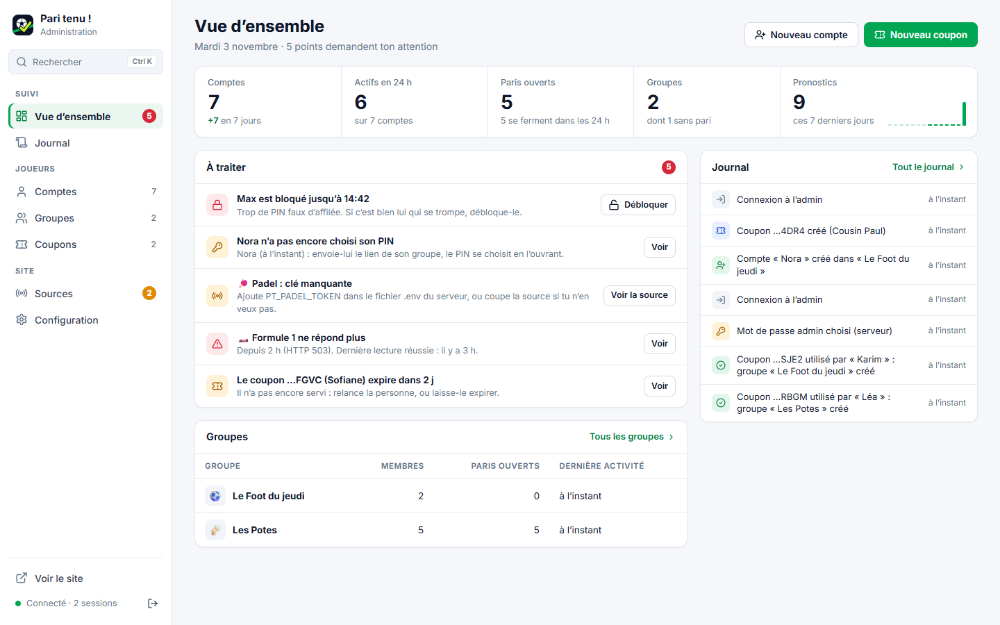
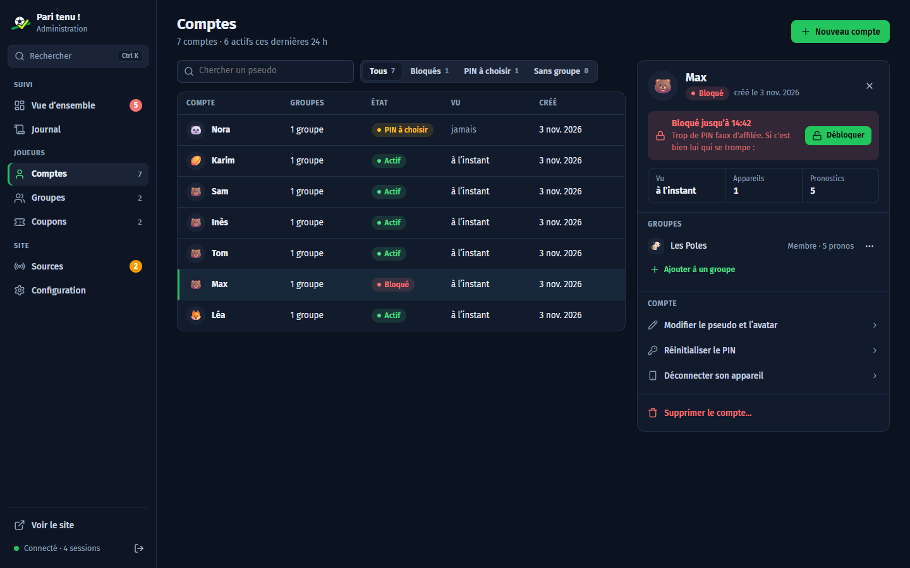
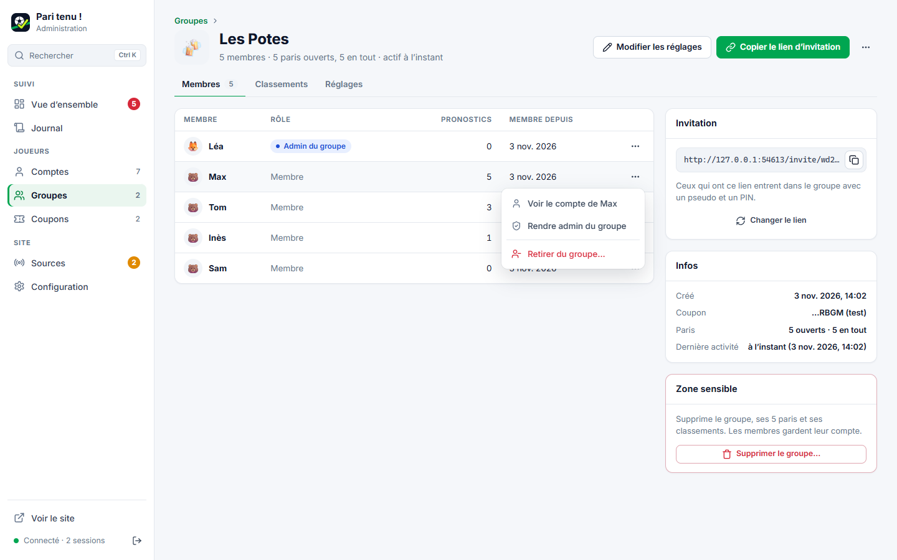
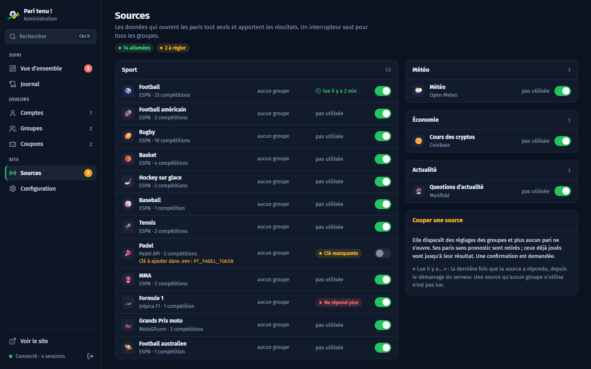
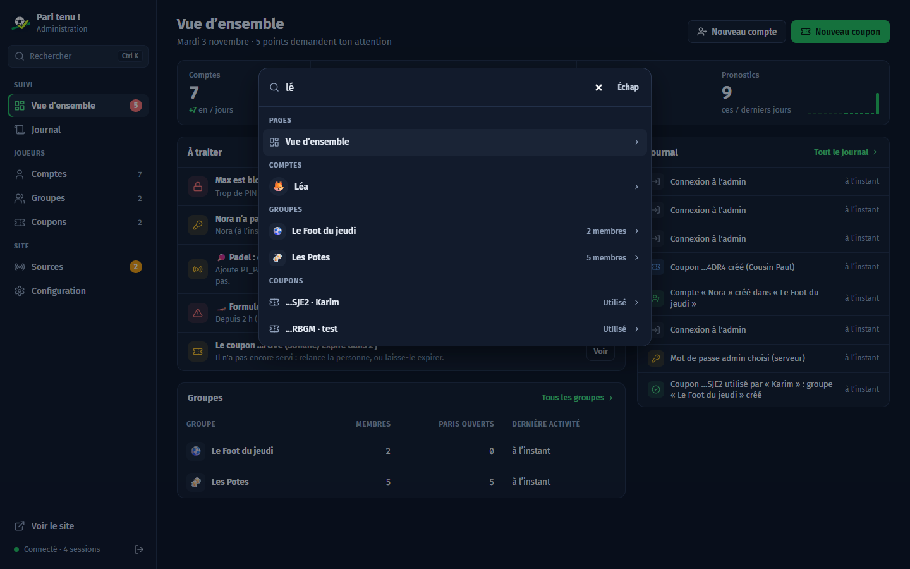

Captures de l’admin codée, sur un serveur de test (données inventées). Sobre en mode clair, Cockpit en mode sombre : l’admin suit le réglage de l’appareil.

PC · Vue d’ensemble (Sobre)« À traiter » d’abord : chaque point a son bouton.

PC · Comptes et fiche (Cockpit)La fiche de Max s’ouvre à droite, le blocage et « Débloquer » en tête.

PC · Un groupeOnglets, menu « ⋯ » d’un membre ouvert.

PC · SourcesInterrupteurs, « lue il y a … », « Ne répond plus ».

PC · Recherche (Ctrl K)Comptes, groupes, coupons, pages.